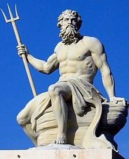

Neptuno es el planeta más exterior de los planetas "gigantes" gaseoso y de un color azul que recuerda a La Tierra(pero solo en el color, pues Neptuno no tiene superficie sólida su temperatura es de -190ºC el "día" dura 16 horas y el "año" es de 60.000 dias)
Como los demas "planetas gigantes", Neptuno tambien tiene anillos. Los anillos y 6 de sus 13 satélites fueron descubiertos por Voyager 2 en 1989. Neptuno es un planeta dinámico, con "manchas" como Jupiter.
La mas grande es la Gran Mancha Oscura, una tormenta de tamaño variable, que aparece y desaperece y que es a veces tan grande como la Tierra
Es un satelite de Neptuno que lleve el nombre del hijo del dios griego Poseidón. Su orbita es "retrógrada", es decir, opuesta a la del planeta. Su superficie es rugoso y recuerda a un melon tropical(canraloupe). En ella hay cráteres de "volcanes de hielo".
El nombre de Urano procede del dios romano del mar(Neptuno). El nombre fue propuesto por el astrónomo Urbain Le Verrier, quien, junto a otros astrónomos, descubrió el planeta en 1846.
Neptuno se formo a partir de un disco de polvo y gas en el sistema solar primario, similar a como se formaron los demás planetas.


Imagen del Dios